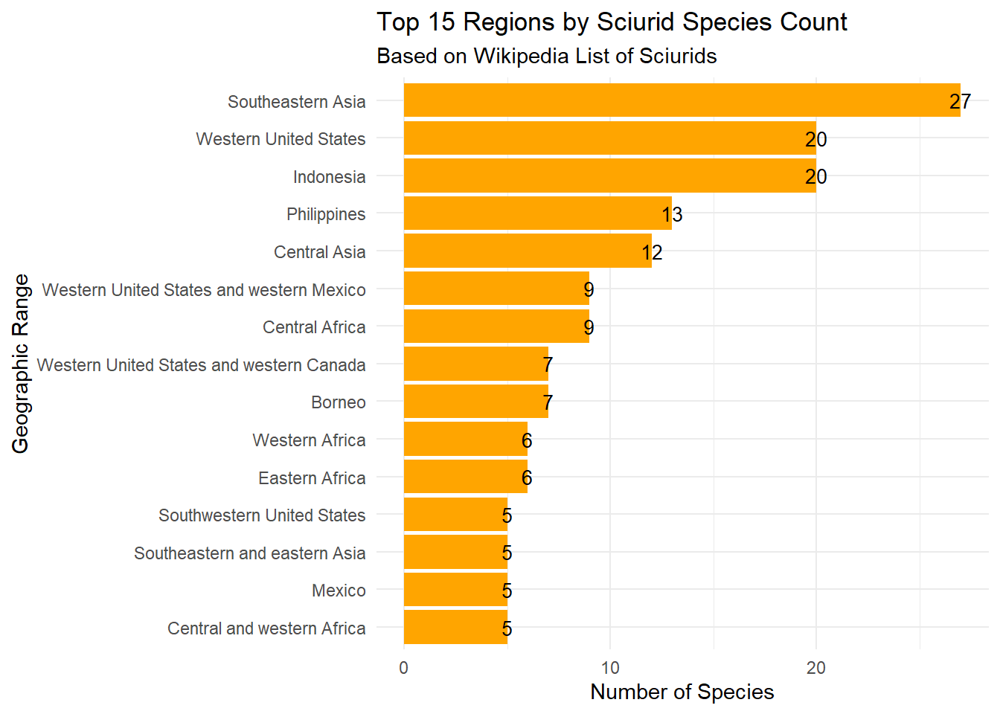

For this Portfolio piece, I wanted to practice webscraping. I’ve tried doing this with Youtube and ran into a multitude of issues. As such, I’ve decided to webscrape from a makeup companies’ website. I want to analyze their lip products and see if they mainly sell lipgloss versus matte or satin lip products. My steps are outlined below.
To begin, I have to know whether bots are allowed on this page (spoiler: they are!).
library(robotstxt)
paths_allowed("https://en.wikipedia.org/wiki/List_of_sciurids")## en.wikipedia.org## [1] TRUEIn the section below, I read the data in from Wikipedia. I used Google Gemini to help where I got stuck, such as on line 37 where I was having trouble reading in the Scientific Names, since I couldn’t find the solution from lab where we scrapped information from the Edinburgh museum. In particular, I was having an issue where I was reading the Scientific names in as “Scientific name hide X subspecies.” To remedy this, Gemini suggested this code to help R find only the first two words of the sentence. So, instead of “Squirrel Genusname hide 5 species” we get “Squirrel Genusname.” I was confused as to why we wouldn’t just split the text but realized that doing it this way was a form of pattern recognition and, so, I kept the change since it solved the issue I was having.
library(tidyverse)## ── Attaching core tidyverse packages ──────────────────────── tidyverse 2.0.0 ──
## ✔ dplyr 1.1.4 ✔ readr 2.1.6
## ✔ forcats 1.0.1 ✔ stringr 1.6.0
## ✔ ggplot2 4.0.1 ✔ tibble 3.3.1
## ✔ lubridate 1.9.4 ✔ tidyr 1.3.2
## ✔ purrr 1.2.1
## ── Conflicts ────────────────────────────────────────── tidyverse_conflicts() ──
## ✖ dplyr::filter() masks stats::filter()
## ✖ dplyr::lag() masks stats::lag()
## ℹ Use the conflicted package (<http://conflicted.r-lib.org/>) to force all conflicts to become errorslibrary(rvest)##
## Attaching package: 'rvest'
##
## The following object is masked from 'package:readr':
##
## guess_encodingurl <- "https://en.wikipedia.org/wiki/List_of_sciurids"
page <- read_html(url)
tables <- page %>%
html_elements("table.wikitable") %>%
html_table()
sciurid_master <- tables %>%
keep(~ "Common name" %in% colnames(.x)) %>%
bind_rows()
sciurid_final <- sciurid_master %>%
mutate(
Scientific_Name = str_extract(`Scientific name and subspecies`, "^[A-Z][a-z]+ [a-z]+"),
Subspecies_Info = str_remove_all(`Scientific name and subspecies`, "hide")
) %>%
select(Scientific_Name, `Common name`, Range, `Size and ecology`, everything())
head(sciurid_final)## # A tibble: 6 × 7
## Scientific_Name `Common name` Range `Size and ecology` Scientific name and …¹
## <chr> <chr> <chr> <chr> <chr>
## 1 <NA> Anderson's sq… Sout… Size: About 20 cm… "C. quinquestriatus (…
## 2 <NA> Black-striped… Sout… Size: 18–20 cm (7… "C. nigrovittatus (Ho…
## 3 <NA> Borneo black-… Nort… Size: 14–16 cm (6… "C. orestes (Thomas, …
## 4 <NA> Ear-spot squi… Born… Size: 15–17 cm (6… "C. adamsi (Kloss, 19…
## 5 <NA> Finlayson's s… Sout… Size: 19–21 cm (7… "C. finlaysonii (Hors…
## 6 <NA> Grey-bellied … Sout… Size: 21–22 cm (8… "C. caniceps (Gray, 1…
## # ℹ abbreviated name: ¹`Scientific name and subspecies`
## # ℹ 2 more variables: `IUCN status and estimated population` <chr>,
## # Subspecies_Info <chr>Next, I wanted to actually plot the regions all of the squirrels were from. To do this, I used the forcats functions to reorder the bars.
sciurid_plot_data <- sciurid_final %>%
# I wanted to filter out any rows where range might be missing
filter(!is.na(Range)) %>%
count(Range) %>%
# I only show the top 15 regions so the graph isn't too crowded
slice_max(n, n = 15)
ggplot(sciurid_plot_data, aes(y = fct_reorder(Range, n), x = n)) +
geom_col(fill = "orange") +
# Add labels to the bars for clarity
geom_text(aes(label = n), size = 3.5) +
labs(
title = "Top 15 Regions by Sciurid Species Count",
subtitle = "Based on Wikipedia List of Sciurids",
x = "Number of Species",
y = "Geographic Range"
) +
theme_minimal()
From the data, we can see that a lot of Scurid Species can be found in Southeast Asia. However, coming up quickly behind is Western U.S. Since these are where the majority of Scurid species can be found, I’d like to know exactly which squirrels live in this area. To do this, I’ll select cases with Southeast Asia and Western U.S. as cases.
priority_squirrels <- sciurid_final %>%
filter(
str_detect(Range, "Southeastern Asia") |
str_detect(Range, "Western United States")
) %>%
select(Scientific_Name, `Common name`, Range)
head(priority_squirrels)## # A tibble: 6 × 3
## Scientific_Name `Common name` Range
## <chr> <chr> <chr>
## 1 <NA> Black-striped squirrel Southeastern Asia
## 2 <NA> Finlayson's squirrel Southeastern Asia
## 3 <NA> Grey-bellied squirrel Southeastern Asia
## 4 <NA> Inornate squirrel Southeastern Asia
## 5 <NA> Plantain squirrel Southeastern Asia
## 6 <NA> Prevost's squirrel Southeastern Asianrow(priority_squirrels)## [1] 64Now that I’ve split my data apart, I wanted to make a tool so people could find the specific squirrels in this region.
library(DT)
datatable(priority_squirrels,
options = list(pageLength = 5),
colnames = c("Scientific Name", "Common Name", "Geographic Range"),
caption = 'Searchable List of Southeast Asian and Western U.S. Squirrels')Now I’ll make an overall table for the entire dataset scrapped from the Wikipedia page. But to do that, I need to select only the Scientific Name, Common Name, and Geographic Range.
main_squirrels <- sciurid_final %>%
select(Scientific_Name, `Common name`, Range)
head(main_squirrels)## # A tibble: 6 × 3
## Scientific_Name `Common name` Range
## <chr> <chr> <chr>
## 1 <NA> Anderson's squirrel Southern China and Myanmar
## 2 <NA> Black-striped squirrel Southeastern Asia
## 3 <NA> Borneo black-banded squirrel Northern Borneo
## 4 <NA> Ear-spot squirrel Borneo
## 5 <NA> Finlayson's squirrel Southeastern Asia
## 6 <NA> Grey-bellied squirrel Southeastern Asiadatatable(main_squirrels,
options = list(pageLength = 5),
colnames = c("Scientific Name", "Common Name", "Geographic Range"),
caption = 'Searchable List of Squirrels Across the World')